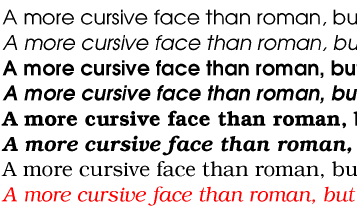
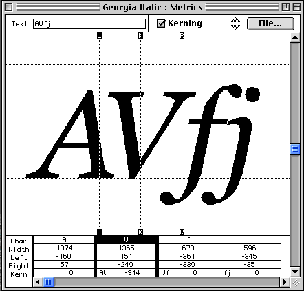
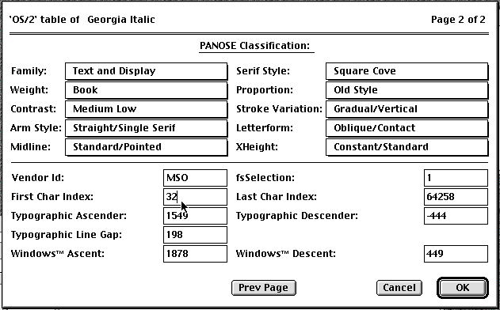
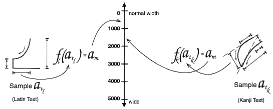

Приложение С. Замечания по
реализации и выполнению для шрифтов
Это приложение является только
информативным, но не нормативным.
- DocLock™
- Bitstream-технология DocLock™ гарантирует,
что TrueDoc
PFRs могут использоваться только на том сайте,
где они опубликованы. TrueDoc
PFR, перемещённый на другой сайт или имеющий
на себя ссылку с другого сайта, работать не
будет.
- Digital Signature/Цифровая
подпись
- Часть технологии доверительного
управления, используемая для
предоставления подтверждения о ресурсе.
- Font Caching/Кэширование
шрифта
- Кэширование шрифта позволяет
временно копировать шрифты на клиентской
системе. Шрифты часто хранятся на диске с
другими кэшированными объектами, такими
как графика, специфичными для
пользовательского агента (ПА).
- Font Face
- "Разновидность", относится к
определённой разновидности шрифта, за
исключением его размера.
- Font Matching/Совпадение
шрифтов
- Совпадение шрифтов - это процесс
выбора похожего шрифта на базе одного или
нескольких атрибутов основного шрифта.
Обычные атрибуты: serif/с засечками, sans-serif/без
засечек, вес, высота заглавных, x-высота,
spacing/плотность, язык и
posture/позиция. Совпадение шрифтов зависит от
алгоритма и разнообразия шрифтов-кандидатов.
- Glyph Representation Sub-setting/Подразделение
Представления Глифов
- Подразделение (поднабор) представления
глифов это процесс, при котором ненужные
глифы (вместе с их информацией об
ориентации и кернинге) удаляются из
основного шрифта, чтобы создать
уменьшенный поднабор шрифта, покрывающий
определённый документ или набор
документов. Это обычный способ для
документов, использующих идеографическое
письмо, где дополнение глифами базового
шрифта может быть очень обширным.
Подразделение представления глифов для
документов, использующих письмо с
лигатурами, такое как арабское,
представляет трудности при отсутствии
сведений о правилах формирования лигатур
на конечной системе вывода.
- Intellifont
- Intellifont-технология была разработана
фирмой Agfa и является первичным форматом
для Hewlett-Packard и других принтеров,
использующих язык PCL5. Это также первичный
формат шрифтов компьютеров Amiga.
- Infinifont
- Техника синтезирования шрифтов, которая,
задавая число Panose-1 (и, по выбору,
дополнительные данные описания шрифта),
может генерировать красивый шрифт без
экстраполирования из одного мастер-контура
или интерполяции между двумя или более
контурами (см. [INFINIFONT]).
- Italic
- Класс форм букв латиницы, которые более
курсивны, чем буквы roman-форм, но менее
курсивны, чем формы ручного письма. Часто
пары шрифтов разрабатываются и
используются совместно; один - roman с
засечками, а другой - italic. Другие термины
для описания этого класса форм букв:
cursive и, для кириллицы, kursiv. Для
разновидностей sans-serif дополнительная
разновидность - это часто наклонный
вариант, а не другой класс форм букв.
 [D]
- Kerning/Кернинг
- Изменение расстояния между выбранными
представлениями глифов, которое может
быть слишком большим или слишком
маленьким, чтобы получить более ровный
типографский цвет.
 [D]
Multiple Master Font/Множественный
мастер-ширфт- Множественный мастер-шрифт содержит
два первичных шрифта, которые
используются со специальными программами
вывода для предоставления
интерполированного результата. Adobe
Systems предоставляет механизм, позволяющий
использовать параметры для управления
выводом или интерполированным вводом
шрифта. Эти параметры обычно описывают
характеристики оригинального шрифта, и
множественный мастер-результат называется
"синтезированный шрифт."
- Open Type
- Open Type это расширение шрифтового формата TrueType,
которое содержит дополнительную
информацию, расширяющую возможности
шрифта в поддержке высококачественной
международной печати. Open Type может
ассоциировать один символ с несколькими
глифами представления и комбинации
символов - с одним глифом (словообразующая
лигатура). Open Type содержит двухмерную
информацию для поддержки свойств
комплексного позиционирования и
присоединения глифов.
TrueType Open и OpenType содержат конкретную
информацию о письме и языке, так что
текстовые процессоры могут уточнять своё
поведение соответственно (см. [OPENTYPE]).
- Server Font/Серверный
шрифт
- Server Font это ресурс шрифта,
размещённый на сервере и вызываемый
определением WebFont. ПА может использовать
этот ресурс для отображения страницы.
- Speedo
- Speedo -технология шрифтов была
разработана Bitstream и является первичным
форматом шрифта на компьютерах Atari ST и Falcon.
Используется также в компьютерах с
запущенной системой X window.
- TrueDoc
- TrueDoc -технология была разработана Bitstream
для создания, переноса и прорисовки
платформонезависимых масштабируемых
объектов шрифта в web. Создание объектов
шрифта выполняется в character shape recorder (CSR)
TrueDoc, а вывод объектов шрифта - в character shape player (CSP)
TrueDoc. Технология предназначена для
просмотра и печати в web.
- TrueDoc Portable Font Resource/Переносимые
Ресурсы Шрифта
- TrueDoc Portable font resource (или PFR) это
платформонезависимый масштабируемый
объект шрифта, вырабатываемый CSP. Ввод
может быть TrueType или Type 1 любого ответвления Windows, Mac
или Unix. TrueDoc Portable Font
Resources предоставляют хорошие пропорции
компрессии, платформонезависимы и,
поскольку они не в первичном формате шрифта
(TrueType или Type 1), не могут легко
инсталироваться.
- TrueType
- TrueType это формат, разработанный Apple и
лицензированный Microsoft. TrueType это первичный
формат шрифта операционной системы для Windows
и Macintosh. TrueType содержит иерархический набор
таблиц и глифов-изображений. Символы могут
выводиться на посимвольном базисе или на
базе размера в пунктах, давая превосходное
качество для данных разрешений экрана.
Шрифты TrueType для Windows и Mac мало отличаются,
хотя и могут быть достаточно различными
для предотвращения межплатформенного
использования.
- TrueType Collection/Коллекция TrueType
- TrueType Collection (или TTC) это расширение
формата TrueType, включающее таблицы,
позволяющие содержать много шрифтов
TrueType в одном файле шрифта TrueType. Файлы TrueType collection
встречаются теперь относительно редко.
- TrueType GX Fonts/TrueType Шрифты GX
- TrueType GX Fonts содержат расширения стандартного
формата TrueType, допускающие изменяющиеся
шрифты, подобные шрифтам Multiple
Master. Может быть несколько мутаций
параметров (осей), таких как вес, высота и
наклон. Ось может определяться, что
позволяет получить практически любой
эффект. TrueType GX может поддерживать также
альтернативные замещения представлений
глифов для лигатур, контекстуальных форм,
дробей и т.д. Для вычислений TrueType GX
доступны только на Mac (см. [TRUETYPEGX]).
- Type 1 font/Шрифты
Type 1
- Шрифты Type 1, разработанные Adobe Systems,
были одним из первых доступных
масштабируемых форматов. Шрифты Type 1
обычно содержат 228 символов с глифами-изображениями,
описанных с использованием кривых третьей
степени bezier. Mac, Windows и X имеют схожие, но
отдельные форматы;
Adobe предоставляет Adobe Type Manager для всех трёх
платформ. Type1c это более ранняя форма с
компрессией без потерь для глифов-изображений
Type 1.
- URI Binding/Связывание с
URI
- Процесс подключения определённого
ресурса шрифта к данному Web-сайту путём
внедрения кодированного URI или цифрового
подтверждения использования в ресурс
шрифта.
Имеется множество различных форматов
шрифта для использования на разных
платформах. Чтобы выбрать предпочтительный
формат шрифта, используется свободная
дискуссия (см. [NEGOT]).
Всегда можно определить, когда ссылка на
шрифт отсутствует, поскольку URI находится
внутри описания шрифта. Данная конкретная
реализация будет знать, какие форматы
загружаемых шрифтов она поддерживает и
может, соответственно, использовать
подсказки формата для исключения загрузки
шрифтов неподдерживаемых форматов.
 [D]
Числа Family, Serif Style и Proportion используются Windows95
для выбора и совпадений шрифтов.
Значения
десяти чисел и допустимые значения (в
скобках) даны ниже для самого общего случая,
когда цифра "family" - 2, Text and Display. (Если
первая цифра имеет другие значения, то
остальные девять цифр имеют другой смысл (значение)).
Детальную информацию о Panose-1 см. в [PANOSE].
- Family
-
- Serif Style
- Any (0)
- No Fit (1)
- Cove (2)
- Obtuse Cove (3)
- Square Cove (4)
- Obtuse Square Cove (5)
- Square (6)
- Thin (7)
- Bone (8)
- Exaggerated (9)
- Triangle (10)
- Normal Sans (11)
- Obtuse Sans (12)
- Perp Sans (13)
- Flared (14)
- Rounded (15)
- Weight
- Any (0)
- No Fit (1)
- Very Light (2)[100]
- Light (3) [200]
- Thin (4) [300]
- Book (5) [400] то же, что CSS1 'normal'
- Medium (6) [500]
- Demi (7) [600]
- Bold (8) [700] то же, что CSS1 'bold'
- Heavy (9) [800]
- Black (10) [900]
- Extra Black / Nord (11) [900] форсирует отображение
в масштаб 100-900 CSS1
- Proportion
- Any (0)
- No Fit (1)
- Old Style (2)
- Modern (3)
- Even Width (4)
- Expanded (5)
- Condensed (6)
- Very Expanded (7)
- Very Condensed (8)
- Monospaced (9)
- Contrast
- Any (0)
- No Fit (1)
- None (2)
- Very Low (3)
- Low (4)
- Medium Low (5)
- Medium (6)
- Medium High (7)
- High (8)
- Very High (9)
- Stroke Variation
- Any (0)
- No Fit (1)
- No Variation (2)
- Gradual/Diagonal (3)
- Gradual/Transitional (4)
- Gradual/Vertical (5)
- Gradual/Horizontal (6)
- Rapid/Vertical (7)
- Rapid/Horizontal (8)
- Instant/Horizontal (9)
- Instant/Vertical (10)
- Arm Style
- Any (0)
- No Fit (1)
- Straight Arms/Horizontal (2)
- Straight Arms/Wedge (3)
- Straight Arms/Vertical (4)
- Straight Arms/Single Serif (5)
- Straight Arms/Double Serif (6)
- Non-Straight Arms/Horizontal (7)
- Non-Straight Arms/Wedge (8)
- Non-Straight Arms/Vertical 90)
- Non-Straight Arms/Single Serif (10)
- Non-Straight Arms/Double Serif (11)
- Letterform
-
- Any (0)
- No Fit (1)
- Normal/Contact (2)
- Normal/Weighted (3)
- Normal/Boxed (4)
- Normal/Flattened (5)
- Normal/Rounded (6)
- Normal/Off Center (7)
- Normal/Square (8)
- Oblique/Contact (9)
- Oblique/Weighted (10)
- Oblique/Boxed (11)
- Oblique/Flattened (12)
- Oblique/Rounded (13)
- Oblique/Off Center (14)
- Oblique/Square (15)
- Midline
-
- Any (0)
- No Fit (1)
- Standard/Trimmed (2)
- Standard/Pointed (3)
- Standard/Serifed (4)
- High/Trimmed (5)
- High/Pointed (6)
- High/Serifed (7)
- Constant/Trimmed (8)
- Constant/Pointed (9)
- Constant/Serifed (10)
- Low/Trimmed (11)
- Low/Pointed (12)
- Low/Serifed (13)
- XHeight
- Any (0)
- No Fit (1)
- Constant/Small (2)
- Constant/Standard (3)
- Constant/Large (4)
- Ducking/Small (5)
- Ducking/Standard (6)
- Ducking/Large (7)
Panose-2 (см. [PANOSE2])
это спецификация более исчерпывающей
классификации шрифтов и технология
совпадений, не ограниченные латиницей.
Например, характеристики засечек латиницы
могут сравниваться с окончаниями линий
разновидности Kanji.

Значение Panose-2 не хранится в каком-либо
известном формате шрифта, но может быть
измерено.
Эта информация доступна в шрифте при
просмотре битов 'ulUnicodeRange' в таблице 'OS/2' (если
она ('OS/2') её имеет), которая (таблица)
содержит битовые поля представления набора.
Эта таблица определена в ревизии 1.66
спецификации TrueType от Microsoft. Можно
рассматривать
эту информацию как набор, где каждый элемент соответствует
блоку символов Unicode 1.1, и присутствие этого
элемента в наборе означает, что шрифт имеет
один или более глифов-изображений для
представления по меньшей мере одного
символа этого блока. Набор содержит 128
элементов, как описано ниже. Порядок обычно
следует порядку стандарта Unicode 1.1. Эта
таблица может использоваться для
конвертации информации в шрифте TrueType в
дескриптор 'unicode-range' CSS.
|
|---|
| Блок | Add/Прибавить | Имя блока | Диапазон
Unicode
|
|---|
|
|---|
| 0 | 1 | Basic Latin | U+0-7F
|
| 1 | 2 | Latin-1 Supplement | U+80-FF
|
| 2 | 4 | Latin-1 Extended-A | U+100-17F
|
| 3 | 8 | Latin Extended-B | U+180-24F
|
|
|---|
| 4 | 1 | IPA Extensions | U+250-2AF
|
| 5 | 2 | Spacing Modifier Letters | U+2B0-2FF
|
| 6 | 4 | Combining Diacritical Marks | U+300-36F
|
| 7 | 8 | Greek | U+370-3CF
|
|
|---|
| 8 | 1 | Greek Symbols and Coptic | U+3D0-3EF
|
| 9 | 2 | Cyrillic | U+400-4FF
|
| 10 | 4 | Armenian | U+530-58F
|
| 11 | 8 | Hebrew | U+590-5FF
|
|
|---|
| 12 | 1 | Hebrew Extended-A
Hebrew Extended-B | ??
какие диапазоны ??
|
| 13 | 2 | Arabic | U+600-69F
|
| 14 | 4 | Arabic Extended | U+670-6FF
|
| 15 | 8 | Devanagari | U+900-97F
|
|
|---|
| 16 | 1 | Bengali | U+980-9FF
|
| 17 | 2 | Gurmukhi | U+A00-A7F
|
| 18 | 4 | Gujarati | U+A80-AFF
|
| 19 | 8 | Oriya | U+B00-B7F
|
|
|---|
| 20 | 1 | Tamil | U+B80-BFF
|
| 21 | 2 | Telugu | U+C00-C7F
|
| 22 | 4 | Kannada | U+C80-CFF
|
| 23 | 8 | Malayalam | U+D00-D7F
|
|
|---|
| 24 | 1 | Thai | U+E00-E7F
|
| 25 | 2 | Lao | U+E80-EFF
|
| 26 | 4 | Georgian | U+10A0-10EF
|
| 27 | 8 | Georgian Extended | U+10F0-10FF ??
|
|
|---|
| 28 | 1 | Hangul Jamo | U+1100-11FF
|
| 29 | 2 | Latin Extended Additional | -
|
| 30 | 4 | Greek Extended | U+1F00-1FFF
|
| 31 | 8 | General Punctuation | U+2000-206F
|
|
|---|
| 32 | 1 | Superscripts and Subscripts | -
|
| 33 | 2 | Currency Symbols | U+20A0-20CF
|
| 34 | 4 | Combining Marks for Symbols | U+20D0-20FF
|
| 35 | 8 | Letterlike Symbols | U+2100-214F
|
|
|---|
| 36 | 1 | Number Forms | U+2150-218F
|
| 37 | 2 | Arrows | U+2190-21FF
|
| 38 | 4 | Mathematical Operators | U+2200-22FF
|
| 39 | 8 | Miscellaneous Technical | U+2300-23FF
|
|
|---|
| 40 | 1 | Control Pictures | U+2400-243F
|
| 41 | 2 | Optical Character Recognition | U+2440-245F
|
| 42 | 4 | Enclosed Alphanumerics | U+2460-24FF
|
| 43 | 8 | Box Drawing | U+2500-257F
|
|
|---|
| 44 | 1 | Block Elements | U+2580-259F
|
| 45 | 2 | Geometric Shapes | U+25A0-25FF
|
| 46 | 4 | Miscellaneous Symbols | U+2600-26FF
|
| 47 | 8 | Dingbats | U+2700-27BF
|
|
|---|
| 48 | 1 | CJK Symbols and Punctuation | U+3000-303F
|
| 49 | 2 | Hiragana | U+3040-309F
|
| 50 | 4 | Katakana | U+30A0-30FF
|
| 51 | 8 | Bopomofo | U+3100-312F
|
|
|---|
| 52 | 1 | Hangul Compatibility Jamo | U+3130-318F
|
| 53 | 2 | CJK Miscellaneous | ??
|
| 54 | 4 | Enclosed CJK Letters and Months | U+3200-32FF
|
| 55 | 8 | CJK compatibility | U+3300-33FF
|
|
|---|
| 56 | 1 | Hangul | U+AC00-D7FF
|
| 59 | 8 | CJK Unified Ideographs | U+4E00-9FFF
|
|
|---|
| 60 | 1 | Private Use Area | U+E000-F8FF
|
| 61 | 2 | CJK Compatibility Ideographs | U+F900-FAFF
|
| 62 | 4 | Alphabetic Presentation Forms | U+FB00-FB4F
|
| 63 | 8 | Arabic Presentation Forms-A | U+FB50-FDFF
|
|
|---|
| 64 | 1 | Combining Half Marks | U+FE20-FE2F
|
| 65 | 2 | CJK compatibility Forms | U+FE30-FE4F
|
| 66 | 4 | Small Form Variants | U+FE50-FE6F
|
| 67 | 8 | Arabic Presentation Forms-B | U+FE70-FEFF
|
|
|---|
| 68 | 1 | Halfwidth and Fullwidth Forms | U+FF00-FFEF
|
| 69 | 2 | Specials | U+FFF0-FFFD
|
Авторские утилиты должны позволять
авторам таблиц стилей добавлять и
редактировать дескрипторы шрифтов. В
некоторых случаях авторские утилиты могут
оказать помощь путём локальной проверки
установленных шрифтов и автоматической
генерации дескрипторов для шрифтов, на
которые имеются ссылки в таблице стилей.
Эта функция может выполняться также
утилитами, подразделяющими или
конвертирующими шрифты для готовности к
динамической загрузке.
Данная таблица указывает, где может быть
найдена такая информация для шрифтов
обычных форматов.
| Дескриптор | Type 1 | TrueType и OpenType | TrueType GX [TRUETYPEGX] |
| 'ascent'
| 'Ascender' в файле AFM/PFM | 'Ascender' в
таблице 'hhea' или (предпочтительнее)
'sTypoAscender' в таблице 'OS/2' | 'horizontalBefore'
в таблице 'fmtx
|
| 'baseline'
| | | таблица bsln, см. примечание
ниже
|
| 'bbox'
| FontBBox, словарь шрифтов | вхождения
таблицы 'head' - 'xMin', 'xMax', 'yMin'
и 'yMax'
|
|
| 'cap-height'
| CapHeight в файле AFM/PFM | |
|
| 'descent'
| 'Descender' в файле AFM/PFM | |
|
| 'mathline'
| | | таблица bsln
|
| 'font-family'
| FamilyName, fontinfo-словарь | таблица name |
|
| 'stemh'
| StdHW, приватный словарь файла AFM/PFM | |
|
| 'stemv'
| /StdVW, приватный словарь | таблица cvt |
|
| 'topline'
| | | таблица bsln
|
| 'unicode-range'
| cmap file | таблица OS/2, см. Приложение
С |
|
| 'units-per-em'
| FontMatrix, словарь шрифтов | unitsPerEm,
таблица head |
|
| 'widths'
| | таблица hmtx |
|
- Внутри таблицы bsln,
ideographic centered baseline может
использоваться для растяжений
преобладающих идеографических символов,
а ideographic low
baseline больше подходит для идеографических
символов при прогоне преобладающих
символов Latin, Greek или Cyrillic.